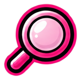

Vind wat je zoekt 🔎Zoek op PinkBulbTCG!
Zoek in de pagina's en artikelen van PinkBulbTCG. Je vindt hier bijvoorbeeld uitleg over kaarten, binders, beurzen en winkels.
Vul een zoekwoord in om te beginnen.

Vind wat je zoekt 🔎Zoek in de pagina's en artikelen van PinkBulbTCG. Je vindt hier bijvoorbeeld uitleg over kaarten, binders, beurzen en winkels.
Vul een zoekwoord in om te beginnen.